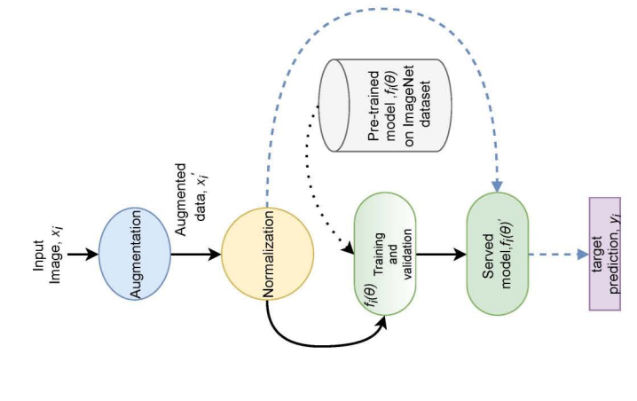
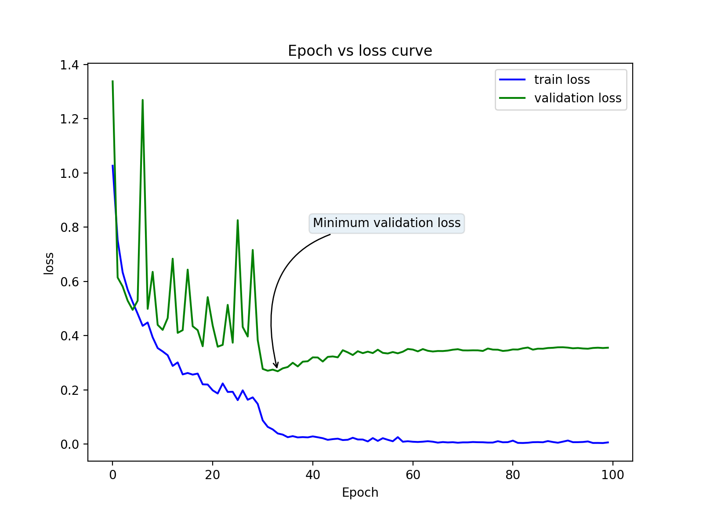

<div id="portfolio-page" class="portfolio-page-content">
    <div class="container">
        <div class="portfolio-nav">
            <div id="portfolio-close-button" class="portfolio-close-button">
                <a href="#portfolio"><i class="fa fa-close"></i></a>
            </div>
        </div>

        <div class="portfolio-title">
            <h1>Research Overview</h1>
        </div>

        <div class="row">
            <div class="col-sm-7 col-md-7 portfolio-block">
                <div class="owl-carousel portfolio-page-carousel">
                    <div class="item">
                        
                    </div>
                    <div class="item">
                        
                    </div>
             
                </div>

                <!-- <div class="portfolio-page-video embed-responsive embed-responsive-16by9">
                  <iframe class="embed-responsive-item" src="https://player.vimeo.com/video/97102654?autoplay=0"></iframe>
                </div> -->

                <!--
                <div class="portfolio-page-image">
                    
                </div>
                -->

                <script type="text/javascript">
                    jQuery(document).ready(function ($) {
                        $('.portfolio-page-carousel').owlCarousel({
                            smartSpeed: 1200,
                            items: 1,
                            loop: true,
                            dots: true,
                            nav: true,
                            navText: false,
                            margin: 10
                        });
                    });
                </script>
            </div>

            <div class="col-sm-5 col-md-5 portfolio-block">
                <!-- Project Description -->
                <div class="block-title">
                    <h3>Multiple Weather Scene Detection Utilizing the EfficientNet Family</h3>
                </div>
                <ul class="project-general-info">
                    <li>
                        <p><i class="fa fa-user"></i>Rabeya Tus Sadia,<b> Md. Atik Ahamed</b>, Dr. Md. Ali Hossain</p>
                    </li>
                    <li>
                        <p><i class="fa fa-globe"></i> <a href="http://dx.doi.org/10.1109/IC4ME253898.2021.9768411"
                                target="_blank">DOI: 10.1109/IC4ME253898.2021.9768411</a></p>
                    </li>
                    <li><p><a href="https://www.researchgate.net/publication/360506809_Multiple_Weather_Scene_Detection_Utilizing_the_EfficientNet_Family"
                        target="_blank"> <span class="badge alert-success">PDF</span></a></p></li>
                    <li>
                        <p><i class="fa fa-calendar"></i>December, 2021</p>
                    </li>

                   

                </ul>

                <p class="text-justify">
                    <b>Abstract</b>
                    <br>
                    Weather is a critical factor in all facets of human life. Not only can extreme weather conditions endanger human life, but they can also wreak havoc on the transportation system, resulting in a national disaster. Thus, weather scene detection has become a primary focus of human interest to mitigate the destruction caused by weather hazards. There are numerous traditional approaches to weather detection that are ineffective. Noise, missing values, and similarity between different weather images all contribute to the difficulty of detecting weather scenes. As a result, deep neural networks perform exceptionally well in this case when it comes to accurately detecting the weather. In this paper, experimentation is conducted with various state-of-the-art methodologies such as ResNet-18, ResNet-50, ResNext50, EfficientNet family. This research work finds that even having a lower number of parameters for EfficientNet versions b0-b3, these versions outperform ResNet-18, ResNet-50, and ResNext-50 for accuracy, precision, f1-score, recall, and loss. This study also finds that EffecientNet b7 outperforms all the other methodologies by having an accuracy of 92.5%, f1-score of 90%, precision of 92.5%, and 91.2% recall score.
                </p>
                <!-- /Project Description -->

                <!-- Technology -->
                <!-- <div class="tags-block">
                    <div class="block-title">
                        <h3>Index Terms</h3>
                    </div>

                    <ul class="tags">
                        <li><a>U-Net</a></li>
                        <li><a>Neural Ordinary Differential Equations</a></li>
                        <li><a>Deep Learning</a></li>
                        <li><a>Semantic Segmentation</a></li>
                        <li><a>Fully ConvolutionalNeural Network</a></li>
                    </ul>
                </div> -->
                <!-- /Technology -->

                <!-- Share Buttons -->

                <!-- /Share Buttons -->
            </div>
        </div>
    </div>
</div>